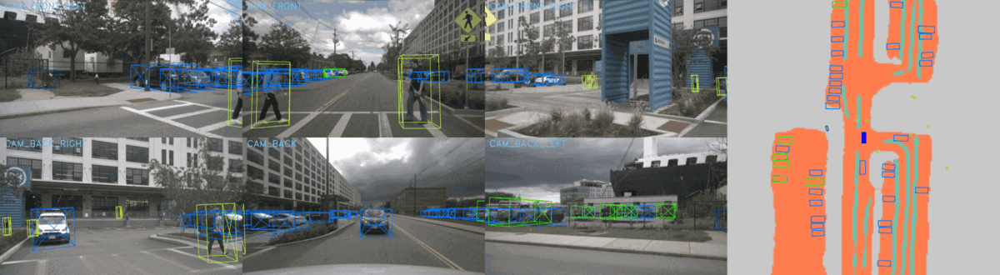
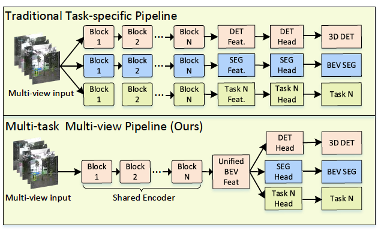
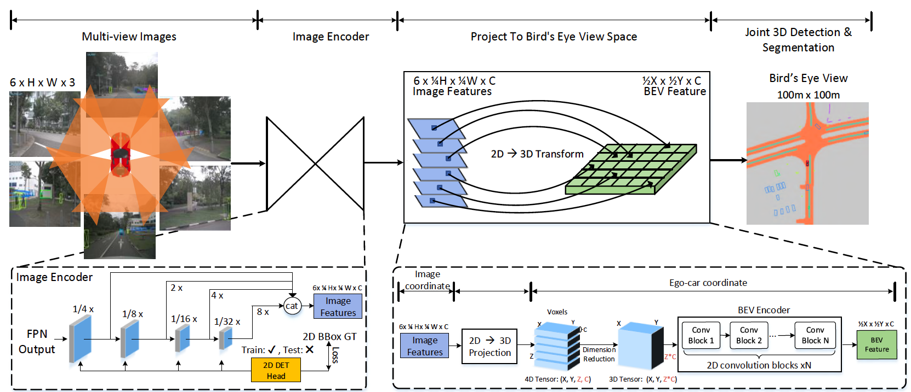

Enze Xie, Zhiding Yu, Daquan Zhou, Jonah Philion, Anima Anandkumar, Sanja Fidler, Ping Luo, Jose M. Alvarez
The University of Hong Kong, NVIDIA, National University of Singapore, University of Toronto, Vector Institute, Caltech
Tech Report

In this paper, we propose M^2BEV, a unified framework that jointly performs 3D object detection and map segmentation in the Bird's Eye View~(BEV) space with multi-camera image inputs. Unlike the majority of previous works which separately process detection and segmentation, M^2BEV infers both tasks with a unified model and improves efficiency. M^2BEV efficiently transforms multi-view 2D image features into the 3D BEV feature in ego-car coordinates. Such BEV representation is important as it enables different tasks to share a single encoder. Our framework further contains four important designs that benefit both accuracy and efficiency: (1) An efficient BEV encoder design that reduces the spatial dimension of a voxel feature map. (2) A dynamic box assignment strategy that uses learning-to-match to assign ground-truth 3D boxes with anchors. (3) A BEV centerness re-weighting that reinforces with larger weights for more distant predictions, and (4) Large-scale 2D detection pre-training and auxiliary supervision. We show that these designs significantly benefit the ill-posed camera-based 3D perception tasks where depth information is missing. M^2BEV is memory efficient, allowing significantly higher resolution images as input, with faster inference speed. Experiments on nuScenes show that M^2BEV achieves state-of-the-art results in both 3D object detection and BEV segmentation, with the best single model achieving 42.5 mAP and 57.0 mIoU in these two tasks, respectively.

